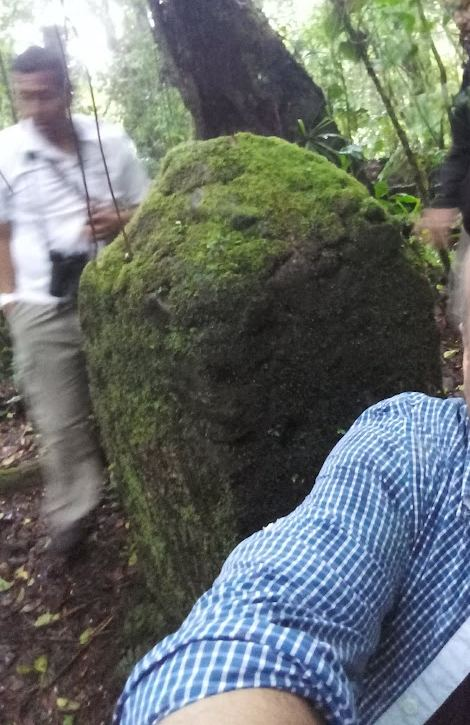
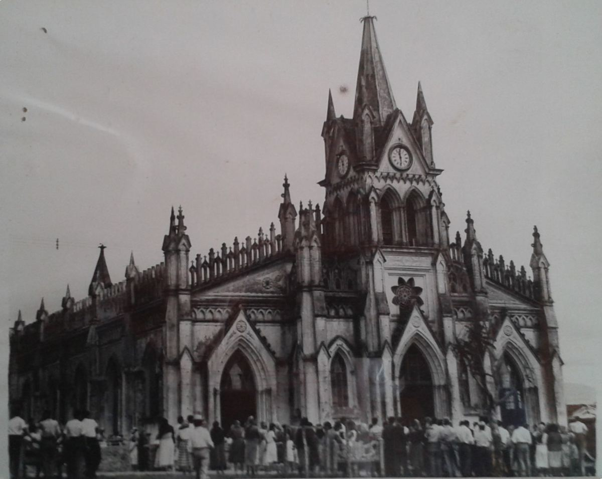

La historia de San Isidro de Heredia empieza en el fuego de un volcán que ya no existe y llega hasta la plaza, el café y las voces de hoy. Recorrela por capas, como quien baja por un corte de tierra.
26,96 km²superficie del cantón4distritos1.330–1.390 msobre el nivel del mar1905año del cantonato
Si toda esta historia cupiera en un solo día
Imaginá que los 500.000 años desde que el Zurquí estaba activo son un solo día: el volcán está a las 00:00 y hoy es la medianoche siguiente, las 24:00. Cada segundo equivale a casi seis años. Casi toda la historia humana cabe en la última media hora, así que abajo hay dos lupas.
Escala: 1 día = 500.000 años; 1 segundo ≈ 5,8 años. AP significa “antes del presente”; en arqueología el presente convencional es 1950, aquí contamos desde 2026 para simplificar. Las fechas antiguas son aproximadas.
naturaleza y primeros pobladoresépoca indígenaColoniaRepública y siglo XXhoy
El recorrido, capa por capa
Nueve capítulos, del más antiguo al más reciente. Las palabras con línea punteada abren una explicación breve. Cada capítulo indica de dónde viene lo que sabemos.
Documento de archivoArqueologíaTestimonio oralHipótesis de trabajoRecreación ilustrada
1
Territorio
hoy
¿Dónde estamos?
San Isidro está al noreste de Heredia, en las faldas de las montañas del Parque Nacional Braulio Carrillo. Es un cantón lluvioso, de ríos, cerros y árboles gigantes: el río Tibás lo cruza de noreste a suroeste, le dio su nombre antiguo a la región y en el siglo XIX movió los de café.
Sus cuatro distritos son San Isidro, San José, Concepción y San Francisco, este último conocido como La Saca. Hoy el cantón pasa de cafetales a una vida más urbana, sin dejar sus fiestas patronales, rezos y asociaciones de desarrollo.
Para recordarMuchos nombres que Octavio Quesada anotó en 1910 al trazar el límite con Santo Domingo siguen en uso: calle de la Quintana, Cuascuá, Tures, el Volador, Pará Blanco.
Los cerros del macizo de Barva, con su altitud en metros. Zurquí, Tibás y Turú son restos de un mismo volcán antiguo. Imagen: archivo del proyecto.
2
Tiempo profundo
hace ~500.000 años
El volcán que ya no existe
La Ruta 32 atraviesa los restos de un volcán extinto que estuvo activo hace unos 400.000 a 500.000 años. Los geólogos lo llaman el “abuelo” del Volcán Barva, que creció encima de él. El Zurquí, Patio de Agua y otros picos son de ese único cono.
¿Quién lo deshizo? El agua. El Braulio Carrillo recibe casi 11 metros de lluvia al año, la segunda cifra más alta del país. Esa lluvia, durante cientos de miles de años, causó y deslizamientos hasta borrar el cono. De esa historia de fuego y agua vienen los suelos fértiles y los de San Isidro, formados por coladas de lava, y depósitos volcánicos.
Para recordarEn 1909, Octavio Quesada acampó en el Zurquí y escribió que talar el cerro era “un crimen enorme”: antes, dijo, la tierra “sudaba agua”. El Parque Braulio Carrillo se creó casi setenta años después, en 1978.
Informe de Quesada (1910)Rafael Bolaños (2024)Ilustraciones de 2025
Ilustraciones generadas con IA para el proyecto en 2025. Son una recreación didáctica, no una reconstrucción científica.
3
Primeros pobladores
hace 12.000 años
Orígenes lejanos
Las primeras personas llegaron a América hace más de 20.000 años desde Asia. En Costa Rica, hallazgos en Turrialba y Sarapiquí muestran gente que vivía de cazar y recolectar hace unos 12.000 años, con .
En San Isidro, sobre todo en Santa Elena y Pará Grande, hay evidencia de asentamiento de al menos 1000 a.C. El territorio era un corredor de caminos hacia Turrialba y Limón.
Lo que cuenta la memoriaLa tradición oral habla de la Cueva del Indio y del Dueño del Monte. Este capítulo crecerá con fuentes arqueológicas y testimonios.
Durante siglos, esta fue una de las zonas más pobladas del país. La arqueología distingue fases: Pavas (500 a.C.–300 d.C.), Curridabat (300–800 d.C.) y Cartago (800–1500 d.C.), cuando se consolidaron los . A esos pueblos los cronistas los llamaron .
En las cartas de Juan Vázquez de Coronado aparece Yurustí, que llegó a su encuentro con unos 35 guerreros. Según el historiador Rafael Bolaños, era un subordinado al cacique Garabito, con residencia en Toyopán, en las nubes de Coronado. La “Gran Toyopán” que daría nombre a la región es una , no un hecho cerrado.
Por el camino del , que subía por el Zurquí hacia Guápiles y Matina, circulaban sal, tortuga, plumas, oro y cerámica pintada.
Para recordarEn el sitio Pará Grande (Santa Elena), excavado en 2012, apareció un colgante de oro en forma de rana de 41 mm, cerca del ajuar más rico del cementerio. Un fechamiento por lo ubica hacia el año 1030.
Museo Nacional (2012–2013)Cartas de Vázquez de CoronadoRafael Bolaños (2024)Gran Toyopán
Lo que guarda la tierra de Pará Grande (aprox. 900–1150 d.C.)
Colgante de oro en forma de rana (41 mm). Foto: Museo Nacional, informe 011-2013; mejorada digitalmente.Metate con ocarinas encima, tal como apareció. Foto: Museo Nacional (2013).Vasijas de un mismo entierro; las pintadas vienen de Guanacaste. Foto: M. L. Villalobos (2012).Rostros y soportes del Grupo San Isidro. Foto: M. L. Villalobos (2012).
Agricultura, manos de moler, hachas pulidas y ollas con hollín.
DesigualdadMás de veinte entierros y 329 objetos. De 189 vasijas, solo 14 son pintadas y traídas de lejos, y 9 de ellas están en un mismo sector, junto al metate labrado, tres y la rana de oro.
Intercambio lejanoCerámica pintada de Guanacaste, oro y de la tradición del sur, coral y una cuenta de piedra verde.
Mando y guerraEscultura de un guerrero con hacha y cabeza trofeo; cabezas de maza.
Estilo propioVasijas con rostros de grandes penachos: el .
Antes aúnHace unos 2.000 años, agricultores de maíz guardaban cosechas en .
¿Era ya un cacicazgo?Los informes hablan de una comunidad agrícola con e intercambio lejano. Llamarla cacicazgo exigiría saber cuántos pueblos había y si uno mandaba sobre otros: eso aún no se ha investigado. Tampoco conviene llamarla “huetar”: es cinco siglos anterior a ese nombre. El Museo Nacional propone llamar a este periodo .
Los sitios no se ubican públicamente: están protegidos por ley y han sufrido . Ver las piezas en la galería.
Abrir el archivo de Pará Grande: 16 láminas de los informes arqueológicos
Tocá una imagen para verla en grande. Los créditos van en cada una.
El hallazgo
Excavación de los entierros 1 y 2: las piedras marcaban las fosas.
Pozos excavados en el cementerio, con sus capas de relleno.
Montículo de piedras y la cabeza trofeo de piedra en su lugar.
El conjunto del metate y, a la derecha, la rana de oro recién hallada, en la mano.
Lo que acompañaba a los muertos
Entierro 5: hacha de piedra pulida, ollita con asas y escudilla pintada de tres patas.
Entierro 1: ollita, una bola de piedra y un cuenco con rostros modelados en el borde.
Hacha pulida y vasija de pedestal con figuras en relieve.
Laja con filo, una olla y un machacador de piedra.
Ocarina con forma de ave, vasijas miniatura y de soportes modelados.
Oro, prestigio y objetos de lejos
La rana de oro (frente y dorso), un fragmento de tumbaga, una cuenta y una figurilla.
Cerámica policroma de Guanacaste-Nicoya, traída de lejos.
Sello cilíndrico de cerámica, para imprimir diseños.
Un estilo propio
Rostros con tocados y penachos del Grupo San Isidro. Las vasijas completas de abajo (e, f) son fotos antiguas publicadas por Lothrop y en los diarios de Tristán.
Vasijas del Grupo San Isidro y del tipo Metrópoli Tricromo.
Piedra pulida y tallada
Escultura de piedra, cabezas talladas, hachas y un metate de patas.
Piedra tallada: laja con filo, lascas y una punta de lanza.
Nombres que quedaron en el mapa
Pará“zacate largo”, según Bolaños.
Parasito“zacate más bajito”.
Turesasistente de Yurustí; hoy un río, un puente y un distrito.
Toyopána veces traducido “lugar de los altares”; su origen sigue en discusión.
Etimologías de fuente oral, sujetas a verificación. Ver .
5
Conquista y Colonia
siglos XVI–XVII
El reparto y el alférez
El 12 de enero de 1569, el gobernador Perafán de Rivera repartió a la población indígena del Valle Central en 108 : unas 23.700 personas entregadas a 85 españoles. Entre 1570 y 1575 se concentró a los pueblos en , como Barva.
La explotación y las epidemias causaron un descenso enorme. Las estimaciones de la población original chocan entre sí: unas 400.000 personas según William Denevan; 22.700 según el obispo Bernardo Thiel.
En el siglo XVII se asentaron y españoles en el “Rincón de Tibás”. Uno de ellos, el Sebastián de Zamora, llegó a tener una gran . Su esposa Luisa de Quintana murió en La Quintana en 1723: de ella viene el nombre de esa calle.
Preguntas abiertas¿Cuándo vivió el alférez Sebastián de Zamora? Las fuentes apuntan tanto a 1576 como a fines del siglo XVII. Y Bolaños señala que la familia tuvo familias esclavizadas en Santo Domingo: falta documentarlo en archivo.
Fonseca, Alvarenga y Solórzano (2002)Rafael Bolaños (2024)
Según Bolaños, el tabaco empujó a familias del oeste de Heredia hacia San Isidro, Tures, Pará y La Palma. Vendían a la del gobierno; cuando la Corona prohibió sembrar fuera de zonas autorizadas, hubo contrabando por los pasos del Virilla.
Del 23 al 25 de agosto de 1787, el Josef Antonio Oreamuno midió las tierras de Tibás y puso cuatro , uno en tres higuerones y un cedro. En total, 54 . Unas 380 personas aportaron dinero para comprarlas en .
En 1795 el título se declaró de toda la comunidad, como . Lo que faltaba pagar lo adelantaron los cosecheros de tabaco: 255 pesos y 6 reales, devueltos en público el 24 de diciembre de 1796.
Hallazgo del proyectoEn una petición de marzo de 1801 aparecen vecinos de “Saca de Agua”: casi treinta años antes de la mención que se creía la primera (1829).
En 1818 un sorteo del ayuntamiento de Heredia fijó nombres de pueblos: el Rincón de Tibás pasó a ser Santo Domingo. Hacia 1830, San Isidro tenía unos 420 habitantes.
En 1841 el agrimensor Henrique Cooper midió las tierras de Tibás y dejó un en las faldas del Zurquí, que todavía se puede visitar. Ese mismo año, el marino William Le Lacheur hizo la primera exportación directa de café de Costa Rica a Londres.
Los beneficios necesitaban agua. Financiaron una zanja desde el río Tibás con presa y un canal largo; de él salían ramales, las , para cada beneficio. De ahí, probablemente, el nombre de La Saca.
El archivo sigue el rastro: “Saca de Agua” ya era un vecindario en 1801; en 1830 la municipalidad de Heredia nombró una comisión para inspeccionar la saca de agua de Santo Domingo y San Pablo; y en 1902 vecinos de Las Cruces se negaron a pagar dos presas de “la saca”, que señalaban como límite con San Isidro.
La ermita se bendijo en 1863 y San Isidro fue en 1866. En 1894 se puso la primera piedra del templo neogótico, con estructura metálica traída de Alemania.

El mojón de Cooper en el bosque del Zurquí. Foto: archivo del proyecto.
Cuando memoria y archivo no coincidenVecinos de La Rinconada recuerdan que los mojones se pusieron en 1834 o 1839; el plano dice 1841. Bolaños fecha a Le Lacheur en 1835; la BBC, en 1841. El proyecto deja ambas diferencias a la vista. Sobre La Saca, una vecina rechaza la versión popular de que el nombre viene de “sacar guaro”: el topónimo ya existía en 1801.
Plano de Cooper (1841)Archivo Nacional (1801, 1830, 1902)Vecinos de La Rinconada y San Francisco
Los vecinos pidieron ser en 1896, 1903 y 1904, y les dijeron que no. El 13 de julio de 1905, la Ley N.º 40 declaró a San Isidro cantón sexto de Heredia; el primer concejo se reunió el 15 de setiembre.
En 1909, Santo Domingo quiso correr el límite. Octavio Quesada recorrió la zona con vecinos y un , y en 1910 recomendó mantener la línea de 1856. Si no, San Isidro habría perdido a San Josecito, su iglesia y hasta su cementerio.
El café mandaba: en 1935 la mitad de la gente vivía en fincas cafetaleras y de 53 beneficios (1887) quedaban seis. La memoria oral recuerda el trabajo infantil desde los 13 años y el de las mujeres; el historiador Lowell Gudmundson lo describe como un que ocultaba el conflicto de clase.
Luego llegaron la cañería (1924–1928), la Escuela José Martí (1928), la electricidad (1952), la ceniza del Irazú (1963) y el título de ciudad (1970). La población urbana pasó de 26,9 % en 2000 a 94,6 % en 2011.

El templo de San Isidro a mediados del siglo XX. Archivo del proyecto; autoría por identificar.
Ley N.º 40 (1905)Monografía de 1955Entrevistas 2015–2025
Antes de los camiones, las carretas llevaban el café a los beneficios, leña y repollo al mercado de Heredia, y madera del Zurquí. En cuestas de barro hacían falta hasta ocho ; de Parasito y San Luis salían caravanas de 20 a 30 carretas hacia San José.
Las fiestas se hacían en en la plaza; los , los salones de baile y el fútbol hicieron comunidad. Y el agua fue punto de encuentro: en la pila de La Rinconada la gente hacía fila desde las 3 de la mañana.
Vecinos de San Isidro y San FranciscoRicardo González (2015)
Desde 2015 el proyecto ha identificado a más de sesenta personas con memoria del cantón y ha conversado con unas cuarenta: cafetaleros, cogedores, maestras, boyeros, comerciantes. Solo se nombra a quien lo autorizó.
«No hubo grano de oro, lo que hubo fue camellada de los peones.»
Vecino de San Isidro, nacido en 1939
«Lo importante para el cafetalero costarricense no era producir café, era garantizar la comercialización.»
Rafael Bolaños, historiador de Santo Domingo
«Se murió el Tournón, se murió el Quesada, se murió el fútbol.»
Los mojones del alférez. El rincón de Tibás en el siglo XVII y el camino del Cuascuá.
La Gran Toyopán. Su gente, palabras huetares y lo que cambió con los nuevos mojones.
El agua del Zurquí (1909). Un cerro talado, nacientes que se secan y la advertencia de Quesada.
Cómo sabemos lo que sabemos
Este proyecto se hace con la comunidad, no solo sobre ella. Usa la , que combina , , archivos y herramientas digitales.
Cruzar fuentes
Cada entrevista se transcribe, se codifica por temas y se contrasta con documentos de archivo.
Nombrar la duda
Cuando la memoria y el papel no coinciden, se marca como pregunta abierta en lugar de elegir una versión.
Cuidar a las personas
Los temas delicados no se publican, y los audios se publican solo con consentimiento de cada persona.
Preguntas abiertas
¿1835 o 1841 para Le Lacheur? ¿Fue la Gran Toyopán una unidad política? ¿Qué pasó en los setenta años entre la advertencia de Quesada y el parque de 1978?
Glosario
Las palabras técnicas del recorrido, explicadas en pocas líneas. Cada una lleva al capítulo donde aparece.
¿Tenés una foto, un papel o un recuerdo?
El proyecto busca especialmente voces de Santa Elena, Concepción y San Josecito, y de mujeres que trabajaron en el café. Cada aporte puede corregir o ampliar esta historia.
Una iniciativa de la Unión Cantonal de Asociaciones de Desarrollo de San Isidro (UCASI), realizada por Antropos, con la colaboración académica de la Universidad de Costa Rica.